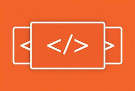
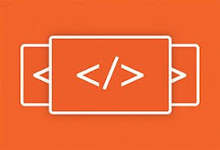

Posted by Hyperion Development
The web as we know it, has changed dramatically since its earliest origins. We used AltaVista to browse some of the first websites that were published in Web 1.0. Later, we turned the sharing of content into a global culture, posting images, recording our own videos and contributing to huge information hubs online – no question was left unanswered. We called this version, Web 2.0. Now we’re talking about Web 3.0. In this post, we explore what Web 3.0 is, and why it matters.
As Daniel Nations explains, coming up with a definition for what Web 3.0 is, is a challenging task. One of the reasons for this, is that technically the origin of Web 3.0 cannot be pinned down to an exact date and time. Some would argue that technically Web 3.0 is already a reality, while others may argue that the transition from Web 2.0 is still a few years away. Either way, it’s difficult to define something that is intangible and without any defining parameters. What we can do towards finding some kind of workable understanding of Web 3.0, is look at its predecessors.
Quite simply, as Nations suggests, Web 2.0 is an “interactive and social web facilitating collaboration between people.” We’ve seen the development of Web 2.0 reach benchmarks like the invention of social media, blogs, wikis and collaborative consumption platforms. This contrasts starkly with what we understand by the term Web 1.0, which can be defined as “a static information dump where people read websites but rarely interacted with them.” By definition then, Web 3.0 is the next generation in the evolutionary progression of the world wide web.
Web 2.0 is characterised by “greater user interactivity and collaboration, more pervasive network connectivity and enhanced communication channels.” Traditionally, before Web 1.0 went mainstream, its usage was reserved for a select few – the few people who understood a bit about how the first search engines worked and the basic technology behind what was then called the “world wide web.”
The evolution of Web 2.0 however, marked the onset of what many now refer to as the “sharing economy” or a more collaborative global community that uses the internet to share information and relay content in a more interactive and participatory way than was previously imagined. Web 2.0 can be associated with social networking sites like Facebook and Twitter, as well as user-generated content, like the information we see on blogs. It is also marked by the emergence of platforms that rely solely on the collaborative knowledge base of its users, like Wikipedia, as well as SaaS (Software as a Service), which includes web applications like Gmail, Dropbox and Slack.
Web 1.0 is largely thought of as the first stage in the development of the world wide web. Technopedia explains that generally speaking, Web 1.0 was a set of static websites that were not yet providing interactive content. These static websites provided users with no reason to return to the site other than to reread existing content. In Web 1.0, users had no influence over the site content and had no ability to interact with the site by leaving comments, making suggestions or sharing the content. Examples of Web 1.0 websites included Ask Jeeves and MSN messenger.

Web 2.0 and the global culture of sharing content has led to the rise of important issues around web security and privacy. Founder of Essentia.one, Matteo Gianpietro Zago suggests that Web 2.0’s successor will be more human-centric: “Rather than concentrating the power (and data) in the hands of huge behemoths with questionable motives, it would be returned to the rightful owners.” So what will this change in direction mean for the web?
Zago predicts that the power will be placed back in the hands of users who will have the security of encryption so that they can regain complete control of their own data. A further development might be the interoperability of applications – instead of only being able to run on one type of device, applications will be device-agnostic and able to run on smartphones, TVs, car operating systems and home appliances. In other words, “the internet of things” will become ever more interconnected.
Whether it’s called Web 3.0 or another name, the fact that the next evolution of the web is imminent, is arguably undeniable. Exciting times lie ahead for the connected world as we redefine the parameters of a system that we have all contributed towards in one way or another. Now more than ever, the world needs devs who can drive the next evolution of the web as we apply the lessons we have learnt.
Interested in trying your hand at web development? Hyperiondev is a great place to start. Schedule a call with us and our mentors will give you great advice on how you can get started.
Back to top